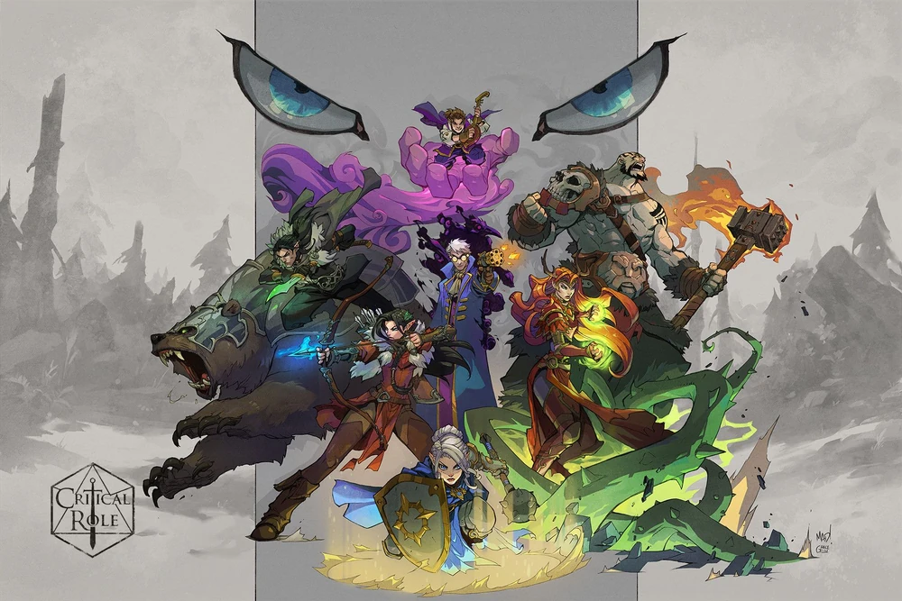
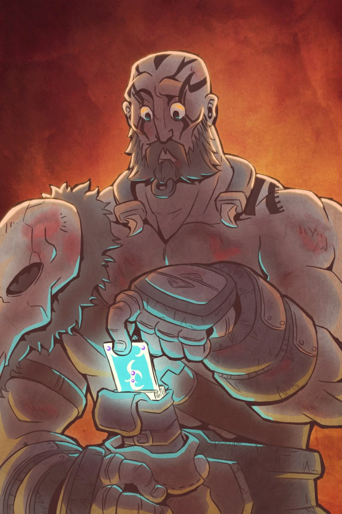
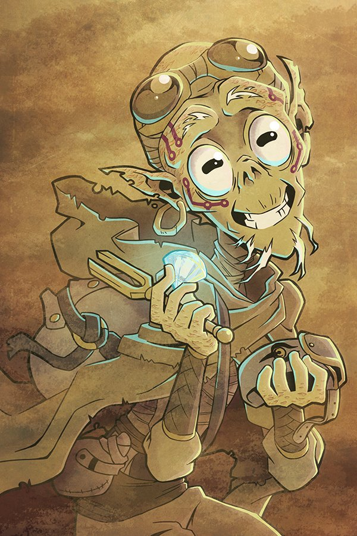
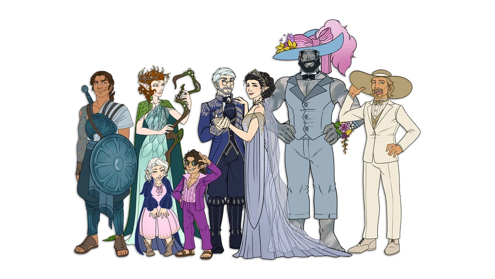

 Art By: @Joe Madureira
TEXT HERE
The main characters are:
Grog Strongjaw
Keyleth
Percival de Rolo
Pike Trickfoot
Scanlan Shorthalt
Taryon Darrington
Tiberius Stormwind
Vax’ildan
Vex’ahlia
The side/guest characters are:
Arkhan
Bertrand Bell
Garthok
Gern Blanston
Ghostfist
Kashaw Vesh
Kerrek
Lieve’tel Toluse
Lillith Daturai
Lionel
Lyra
Shale
Sprigg
Thorbir Falbek
Tova
Zahra Hydris
Art By: @
TEXT HERE
# Tiberius visits the House of Thunderbrand
update_damage_taken('Tib', 8)
# Brawl with Balgus
add_damage('Vax', 'Bludgeoning', 27)The Search for Grog
 Art By: @Takayuuki_art
In the days following their climactic battle with Vecna, Vox Machina is in Whitestone, each member processing the victory individually. Pike, after a contemplative walk in Parchwood forest, returns to Whitestone Castle to find Grog unconscious after drawing a card from the Deck of Many Things. Her efforts to revive him fail, and she seeks help from her companions. Percy, Keyleth, Scanlan, and Vex gather to investigate, discovering that Grog’s card is blank. They decide to travel to Vasselheim for assistance, utilizing Keyleth’s Transport via Plants.
Upon arriving in Vasselheim, they head to the Platinum Sanctuary, where High Bearer Vord and other leaders are gathered. Allura is summoned and determines that Grog’s soul is missing. Scanlan uses the Wish spell to locate Grog’s soul, revealing it is trapped in a red gem on Howler’s Crag in Pandemonium. Bertrand Bell, an older man claiming expertise in Pandemonium, and Lieve’tel Toluse, a priestess, volunteer to assist them despite some doubts about Bertrand’s credibility.
The party rests and prepares for several days, consulting Gilmore for advice and support. Once ready, Allura Plane Shifts them to Pandemonium, where they are immediately assailed by extreme winds and darkness. Bertrand’s guidance proves faulty, but Lieve’tel successfully scries the gem’s location, and the party makes a challenging trek through the storm, encountering a disoriented Githzerai named Bob, who offers cryptic warnings before wandering off.
Reaching a cavern system, the party is attacked by howlers but manages to defeat them and find temporary shelter. They continue through the caverns, confronting a powerful balor and sneaking past it to the tower’s summit. There, they face a massive, black-skinned Empyrean. A fierce battle ensues, with Bertrand and Lieve’tel knocked unconscious and Lieve’tel ultimately killed. Vex sends Trinket, carrying Grog’s body, to the gem, reviving Grog upon contact.
With Grog awakened, he joins the fight, delivering critical hits that ultimately bring down the Empyrean. Despite severe injuries, Vox Machina triumphs, having restored Grog’s soul and defeated their formidable foe.
# Round 1
add_damage('Bertrand', 'Slashing', 33)
add_damage('Lieve', 'Force', 26)
# Magic Missiles
add_enemy_damage('Howler', 'Piercing', 12)
add_enemy_damage('Howler', 'Psychic', 22)
update_damage_taken('Bertrand', 34)
add_damage('Vex', 'Piercing', 65)
increment_kills('Vex')
# Howler
add_damage('Keyleth', 'Lightning', 133)
# Chain Lightning
add_damage('Scanlan', 'Thunder', 38)
# Thunderwave
update_healing('Scanlan', 10)
# Healing Word on Bertrand
# Round 2
add_enemy_damage('Howler', 'Piercing', 14)
add_enemy_damage('Howler', 'Psychic', 24)
update_damage_taken('Bertrand', 38)
update_healing('Lieve', 8)
# Healing Word on Bertrand
add_enemy_damage('Howler', 'Piercing', 15)
add_enemy_damage('Howler', 'Psychic', 22)
update_damage_taken('Lieve', 37)
add_damage('Vex', 'Piercing', 54)
increment_kills('Vex')
# Howler
add_damage('Percy', 'Slashing', 5)
increment_kills('Percy')
# Howler
add_damage('Percy', 'Piercing', 20)
increment_kills('Percy')
# Howler# Round 1
add_damage('Bertrand', 'Slashing', 83)
add_damage('Vex', 'Piercing', 51)
add_damage('Vex', 'Fire', 7)
# Blazing Bow
add_enemy_damage('Empyrean', 'Bludgeoning', 210)
update_damage_taken('Bertrand', 70)
update_damage_taken('Lieve', 70)
update_damage_taken('Scanlan', 70)
update_damage_taken('Pike', 9)
add_enemy_damage('Empyrean', 'Bludgeoning', 119)
update_damage_taken('Bertrand', 28)
update_damage_taken('Scanlan', 28)
update_damage_taken('Percy', 28)
update_damage_taken('Keyleth', 35)
add_damage('Pike', 'Radiant', 19)
# Guiding Bolt
add_enemy_damage('Empyrean', 'Bludgeoning', 111)
update_damage_taken('Bertrand', 37)
update_damage_taken('Lieve', 37)
update_damage_taken('Scanlan', 37)
update_times_knocked_unconscious('Lieve')
# Knocked unconscious by the Empryean's slams
# Round 2
add_damage('Percy', 'Piercing', 166)
add_enemy_damage('Empyrean', 'Bludgeoning', 64)
update_damage_taken('Scanlan', 32)
update_damage_taken('Bertrand', 32)
# Lieve'tel auto fails two saves from the Empyrean's attack
add_damage('Keyleth', 'Bludgeoning', 29)
update_healing('Bertrand', 27)
# Second Wind
add_damage('Bertrand', 'Slashing', 44)
add_enemy_damage('Empyrean', 'Bludgeoning', 38)
update_damage_taken('Bertrand', 38)
update_times_knocked_unconscious('Bertrand')
# Knocked unconscious by the Empyrean's slam
update_times_killed('Lieve')
# Lieve'tel is subsequently killed from her wounds
add_damage('Vex', 'Piercing', 78)
# Scanlan heals Bertrand back to consciousness
add_enemy_damage('Empyrean', 'Bludgeoning', 29)
update_damage_taken('Scanlan', 29)
add_enemy_damage('Empyrean', 'Bludgeoning', 95)
update_damage_taken('Grog', 38)
update_damage_taken('Bertrand', 38)
update_times_knocked_unconscious('Bertrand')
# Bertrand is knocked unconscious again by the Empyrean
add_damage('Grog', 'Slashing', 152)
increment_kills('Grog')
# Corrupt Empyrean# Wind storm in Pandemonium
update_damage_taken('Pike', 4)
update_damage_taken('Scanlan', 4)
update_damage_taken('Keyleth', 4)
update_damage_taken('Percy', 4)
update_damage_taken('Vex', 4)
update_damage_taken('Bertrand', 4)
update_damage_taken('Lieve', 4)
# Bugbears stole Percy's arm
update_damage_taken('Percy', 23)
update_damage_taken('Bertrand', 23)
increment_kills('Bertrand')
# Bugbear
increment_kills('Bertrand')
# Bugbear
increment_kills('Bertrand')
# Bugbear
increment_kills('Bertrand')
# Bugbear
increment_kills('Bertrand')
# Bugbear
# Through the Balor
update_damage_taken('Pike', 49)
update_damage_taken('Scanlan', 49)
update_damage_taken('Keyleth', 49)
update_damage_taken('Grog', 49)
update_damage_taken('Vex', 49)
update_damage_taken('Lieve', 49)
update_damage_taken('Percy', 49)
update_damage_taken('Bertrand', 49)
update_healing('Lieve', 508)
# Mass Heal on everyone  Art By: @Takayuuki_art
After their intense battle against the corrupted Empyrean and the arduous journey to retrieve Grog’s soul, Vox Machina finds themselves confronted with yet another challenge: the disappearance of their belongings. As they take stock of their losses, suspicion falls heavily on Bob, the enigmatic figure they encountered in their earlier adventures.
In the sanctuary of Scanlan’s Magnificent Mansion, they devise a plan to bring Lieve’tel back to life, utilizing Vex’s wedding ring for the ritual. Amidst personal moments and discussions, including Scanlan’s elaborate bed and Lieve’tel’s flirtations with Bertrand, the group prepares for their next move.
The morning brings a new challenge: descending the treacherous mountain of Pandemonium. Percy’s resourcefulness leads them to a solution involving transformation magic and strategic planning. However, their journey is fraught with danger as they encounter mysterious phenomena like the iron tree and the ominous presence of the dust titan.
Their quest to retrieve their belongings leads them to a confrontation with Bob, where negotiations turn desperate as the elemental threat looms ever closer. In a tense battle against the dust titan, Vox Machina fights for survival, employing every skill and spell at their disposal.
In the aftermath of the battle, amidst injuries and exhaustion, alliances shift as secrets are revealed. Bob’s true identity emerges, offering closure to his enigmatic presence. As they bid farewell to Pandemonium, Vox Machina faces their next steps with resolve, even as personal paths diverge.
Returning to Whitestone, they find solace and camaraderie in their reunion. Lieve’tel contemplates her future while embracing the warmth of newfound connections. As they gather for dinner, amidst laughter and banter, they find comfort in each other’s company, ready to face whatever challenges await them next.
# Round 1
add_damage('Grog', 'Slashing', 13)
add_damage('Grog', 'Necrotic', 3)
add_enemy_damage('Dust Titan', 'Piercing', 181)
update_damage_taken('Scanlan', 16)
update_damage_taken('Pike', 49)
update_damage_taken('Grog', 16)
update_damage_taken('Keyleth', 100)
update_healing('Lieve', 48)
# Mass Healing Word on Keyleth, Grog, and Pike
add_enemy_damage('Dust Titan', 'Piercing', 72)
update_damage_taken('Keyleth', 72)
add_damage('Scanlan', 'Force', 36)
# Bigby's Hand
# Round 2
add_damage('Percy', 'Piercing', 27)
add_damage('Percy', 'Psychic', 4)
add_damage('Percy', 'Necrotic', 4)
add_damage('Percy', 'Lightning', 39)
# Cabal's Ruin
add_damage('Keyleth', 'Necrotic', 48)
# Blight
add_enemy_damage('Dust Titan', 'Piercing', 49)
update_damage_taken('Pike', 41)
update_damage_taken('Grog', 8)
update_healing('Lieve', 23)
# Healing Word on Pike
# Round 3
update_damage_taken('Scanlan', 3)# Aftermath of the Corrupted Empyrean
update_healing('Keyleth', 12)
# Healing Word on Bertrand bringing him back to consciousness
update_healing('Pike', 1)
# Revives Lieve'tel
# Going down Howlers Crag
update_damage_taken('Keyleth', 5)
# Recovery in Whitestone
update_healing('Lieve', 224)
# Mass Heal on everyone Art By: @AnemoneTea
Percival and Vex’halia plan an intimate destination wedding at Dalen’s Closet, inviting a multitude but secretly hoping for a small turnout. As the wedding approaches, friends gather in Whitestone. Keyleth arrives with Derrig, her bodyguard, while Taryon and the rest of the party prepare for their roles in the ceremony.
The rehearsal dinner sets the stage for the festivities, with heartfelt speeches and gifts from well-wishers. However, the evening takes a dark turn when guests mysteriously fall unconscious, and shadowy figures attack, kidnapping Vex and Percy. Held captive by the malevolent Sylas Briarwood, the couple faces a perilous fate as they are thrown off a cliff into the ocean.
The party springs into action, racing against time to rescue their friends. Despite the harrowing ordeal, they manage to save Percy and revive Vex. With Sylas defeated and their loved ones safe, the group decides to proceed with the wedding immediately. Amidst joy and tears, vows are exchanged, and Scanlan’s heartfelt wish brings a bittersweet reunion with Vex’s departed brother, Vax’ildan.
As the celebration commences, the resilient spirit of Vox Machina shines through, reaffirming bonds of friendship and love amidst adversity. With laughter and camaraderie, they embrace the future, honoring the past, and celebrating the unbreakable ties that bind them together.
# Pre-Initiative
add_damage('Derrig', 'Slashing', 55)
# Round 1
add_damage('Grog', 'Slashing', 49)
update_healing('Derrig', 1)
# Heals Keyleth using herbs
# Round 2
add_damage('Grog', 'Slashing', 20)
add_enemy_damage('Vampire', 'Slashing', 8)
add_enemy_damage('Vampire', 'Piercing', 7)
add_enemy_damage('Vampire', 'Necrotic', 9)
update_damage_taken('Grog', 24)
update_healing('Keyleth', 7)
# Healing Word on Pike waking her back uo
add_damage('Derrig', 'Slashing', 38)
update_healing('Pike', 66)
# Mass Healing Word on Pike, Keyleth, Scanlan, Kima, Grog, Allura waking up Allura and Scanlan
add_damage('Pike', 'Radiant', 24)
# Guiding Bolt
# Round 3
add_damage('Vex', 'Piercing', 16)
# Trinket
add_damage('Vex', 'Slashing', 8)
# Trinket
add_damage('Grog', 'Slashing', 45)
add_enemy_damage('Vampire', 'Piercing', 6)
add_enemy_damage('Vampire', 'Necrotic', 7)
update_damage_taken('Grog', 13)
add_damage('Grog', 'Slashing', 20)
increment_kills('Grog')
# Vampire
update_healing('Pike', 100)
# Pike heals herself, Grog, Scanlan, Derrig, Keyleth with Mass Cure Wounds# Round 1
add_enemy_damage('Vampire', 'Slashing', 7)
update_damage_taken('Grog', 7)
add_enemy_damage('Sylas', 'Slashing', 32)
add_enemy_damage('Sylas', 'Necrotic', 36)
update_damage_taken('Grog', 68)
add_damage('Grog', 'Slashing', 43)
update_healing('Pike', 24)
# Cure Wounds on Vex'halia
update_healing('Vex', 16)
# Cure Wounds on herself
update_healing('Percy', 27)
# Second Wind
update_healing('Scanlan', 7)
# Healing Word on himself
# Round 2
add_damage('Percy', 'Piercing', 50)
add_enemy_damage('Vampire', 'Slashing', 11)
update_damage_taken('Grog', 11)
add_damage('Grog', 'Slashing', 27)
add_enemy_damage('Sylas', 'Slashing', 32)
add_enemy_damage('Sylas', 'Necrotic', 45)
update_damage_taken('Grog', 77)
add_damage('Grog', 'Slashing', 79)
add_damage('Grog', 'Necrotic', 8)
add_damage('Scanlan', 'Lightning', 36)
# Lightning Bolt
# Round 3
add_enemy_damage('Vampire', 'Slashing', 6)
add_enemy_damage('Vampire', 'Piercing', 2)
add_enemy_damage('Vampire', 'Necrotic', 6)
update_damage_taken('Grog', 14)
add_damage('Derrig', 'Slashing', 51)
add_damage('Grog', 'Slashing', 108)
add_damage('Grog', 'Necrotic', 11)
increment_kills('Grog')
# Vampire
add_damage('Vex', 'Piercing', 22)
# Conjure Barrage
add_damage('Scanlan', 'Fire', 26)
# Wand of Fire
# Round 4
add_damage('Percy', 'Piercing', 74)
add_damage('Pike', 'Radiant', 40)
# Daylight
increment_kills('Pike')
# Vampire
increment_kills('Pike')
# Vampire
add_damage('Grog', 'Slashing', 28)
increment_kills('Grog')
# Vampire
add_damage('Keyleth', 'Radiant', 13)
# Sunbeam
add_damage('Percy', 'Piercing', 13)
add_damage('Grog', 'Slashing', 31)
add_damage('Grog', 'Necrotic', 2)
add_damage('Vex', 'Radiant', 30)
increment_kills('Vex')
# Sylas Briarwood# Vex and Percy awake to Sylas
add_damage('Vex', 'Bludgeoning', 2)
# Vex starts drowning
update_times_knocked_unconscious('Vex')
# Vex falls unconscious from drowning
# Vex fails a death save
# Vex fails a death save
update_times_killed('Vex')
# Vex drowns
update_healing('Pike', 1)
# Pike revives Vex'halia